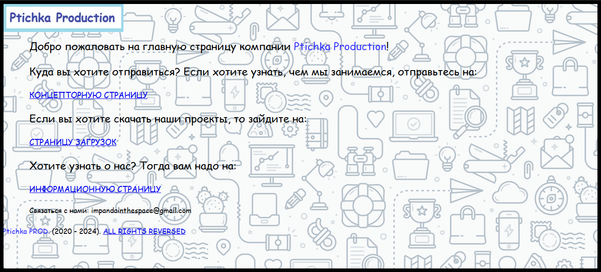

Добро пожаловать на информационную страницу компании Ptichka Production
ИСТОРИЯ КОМПАНИИ:
Компания основана 26-го сентября 2020-го года двумя школьниками из Пскова, которые создали свою 1-ю игру под названием "FIVE NIGHTS AT STIKMAN" (все еще на этапе ВETA,но уже RC). В то время она называлась "Кепчик PRODUCTION".Компания терпела множество редизайонв и переименований. Спустя время компания развилась, переименовалась в "Ptichka production" и на данное время (июнь 2024-го года) в ней всего 2 человека (считая основателя), хотя в Июле 2022-го было 8 человек.
НЕМНОГО ОБ ЭТОМ САЙТЕ:
Страница написана на языке "HTML(HyperText Markup Language)" всего за месяц (тогда были лишь основы). В то время (2023-й год) сайт ничем не примечателен, это было просто несколько связанных между собой файлов с переходами по ссылкам. Сейчас же сайт имеет хост на github.com, систему отзывов, более крсивое оформление
Действия:
Ptichka production (May 2023). ALL RIGHTS REVERSED